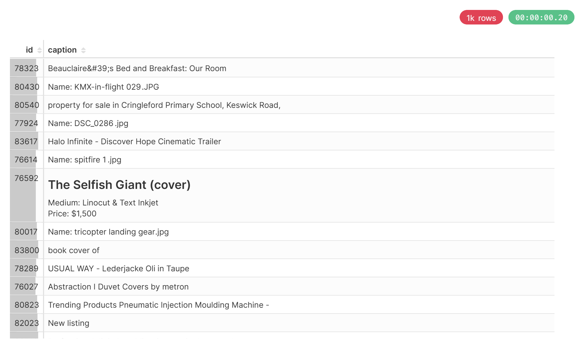

WSL Installation
wsl --installwsl -d UbuntuInstall ClickHouse
Setup the Debian repository
# Install prerequisite packages
sudo apt-get install -y apt-transport-https ca-certificates curl gnupg
# Download the ClickHouse GPG key and store it in the keyring
curl -fsSL 'https://packages.clickhouse.com/rpm/lts/repodata/repomd.xml.key' | sudo gpg --dearmor -o /usr/share/keyrings/clickhouse-keyring.gpg
# Get the system architecture
ARCH=$(dpkg --print-architecture)
# Add the ClickHouse repository to apt sources
echo "deb [signed-by=/usr/share/keyrings/clickhouse-keyring.gpg arch=${ARCH}] https://packages.clickhouse.com/deb stable main" | sudo tee /etc/apt/sources.list.d/clickhouse.list
# Update apt package lists
sudo apt-get updateInstall ClickHouse server and client
sudo apt-get install -y clickhouse-server clickhouse-clientStart ClickHouse
sudo service clickhouse-server startclickhouse-clientData preparation and Import data
คู่มือนี้จะแนะนำคุณผ่านขั้นตอนการดาวน์โหลด LAION embeddings และ metadata การประมวลผลข้อมูลให้อยู่ในรูปแบบ CSV และการนำเข้าสู่ ClickHouse
การเตรียมข้อมูลและการนำเข้า
ขั้นตอนที่ 1: สร้างสคริปต์ดาวน์โหลด
สร้างไฟล์ชื่อ download.sh พร้อมเนื้อหาดังนี้:
#!/bin/bash
number=${1}
if [[ $number == '' ]]; then
number=1
fi
# ดาวน์โหลดไฟล์พร้อมระบบลองใหม่
wget --tries=100 https://deploy.laion.ai/8f83b608504d46bb81708ec86e912220/embeddings/img_emb/img_emb_${number}.npy
wget --tries=100 https://deploy.laion.ai/8f83b608504d46bb81708ec86e912220/embeddings/text_emb/text_emb_${number}.npy
wget --tries=100 https://deploy.laion.ai/8f83b608504d46bb81708ec86e912220/embeddings/metadata/metadata_${number}.parquet
# ประมวลผลไฟล์ที่ดาวน์โหลดมา
python3 process.py $numberขั้นตอนที่ 2: สร้างสคริปต์ประมวลผล
สร้างไฟล์ชื่อ process.py:
import pandas as pd
import numpy as np
import os
import sys
# รับหมายเลขไฟล์จาก command line argument
str_i = str(sys.argv[1])
# กำหนดชื่อไฟล์
npy_file = f"img_emb_{str_i}.npy"
metadata_file = f"metadata_{str_i}.parquet"
text_npy = f"text_emb_{str_i}.npy"
# โหลด embeddings และ metadata
im_emb = np.load(npy_file)
text_emb = np.load(text_npy)
data = pd.read_parquet(metadata_file)
# รวมข้อมูลเป็น DataFrame เดียว
data = pd.concat([
data,
pd.DataFrame({"image_embedding": [*im_emb]}),
pd.DataFrame({"text_embedding": [*text_emb]})
], axis=1, copy=False)
# เลือกและเตรียมคอลัมน์
data = data[['url', 'caption', 'NSFW', 'similarity', "image_embedding", "text_embedding"]]
# แปลง embeddings เป็นรูปแบบ list และทำความสะอาด caption text
data['image_embedding'] = data['image_embedding'].apply(lambda x: list(x))
data['text_embedding'] = data['text_embedding'].apply(lambda x: list(x))
data['caption'] = data['caption'].apply(lambda x: x.replace("'", " ").replace('"', " "))
# บันทึกเป็น CSV และลบไฟล์ชั่วคราว
csv_filename = f"{str_i}.csv"
data.to_csv(csv_filename, header=False)
os.system(f"rm {npy_file} {metadata_file} {text_npy}")ขั้นตอนที่ 3: ให้สิทธิ์การรันสคริปต์
ให้สิทธิ์การรันสคริปต์ดาวน์โหลด:
chmod +x download.shขั้นตอนที่ 4: ดาวน์โหลดและประมวลผลข้อมูล
รันสคริปต์เพื่อดาวน์โหลดและประมวลผลชุดแรก:
./download.sh 1หมายเหตุ:
คุณสามารถระบุหมายเลขชุดต่าง ๆ ได้โดยการส่งเป็น argument (เช่น
./download.sh 2,./download.sh 3เป็นต้น)
การตั้งค่า ClickHouse
ขั้นตอนที่ 1: เชื่อมต่อกับ ClickHouse
เริ่มต้น ClickHouse client:
clickhouse-clientขั้นตอนที่ 2: สร้างโครงสร้างตาราง
รัน SQL ต่อไปนี้เพื่อสร้างตาราง LAION:
CREATE TABLE laion
(
`id` Int64,
`url` String,
`caption` String,
`NSFW` String,
`similarity` Float32,
`image_embedding` String,
`text_embedding` String
)
ENGINE = MergeTree
ORDER BY id
SETTINGS index_granularity = 8192;ขั้นตอนที่ 3: นำเข้าข้อมูล CSV
นำเข้าไฟล์ CSV ที่ประมวลผลแล้วเข้าสู่ตาราง:
INSERT INTO laion FROM INFILE '/path/to/your/csv/files/*.csv';สำคัญ:
เปลี่ยน
/path/to/your/csv/files/เป็นเส้นทางจริงที่เก็บไฟล์ CSV ของคุณ
โครงสร้างไฟล์
หลังจากรันสคริปต์แล้ว ไดเร็กทอรีของคุณควรมี:
├── download.sh # สคริปต์ดาวน์โหลด
├── process.py # สคริปต์ประมวลผล
└── 1.csv # ไฟล์ CSV ที่ประมวลผลแล้วSuperset Installation
Get Superset
git clone https://github.com/apache/supersetStart the latest official release of Superset
# Enter the repository you just cloned
$ cd superset
# Set the repo to the state associated with the latest official version
$ git checkout tags/5.0.0
# Fire up Superset using Docker Compose
$ docker compose -f docker-compose-image-tag.yml upLog into Superset
ตอนนี้ไปที่ http://localhost:8088 และเข้าสู่ระบบด้วยบัญชีที่สร้างขึ้นตามค่าเริ่มต้น
username: admin
password: adminClickHouse Superset Integration
คู่มือการเชื่อมต่อ ClickHouse database กับ Apache Superset สำหรับการสร้างการวิเคราะห์และการแสดงผลข้อมูลแบบ interactive
1. เชื่อมต่อกับ Superset Container
เปิด terminal:
docker exec -it superset_app bash2. ติดตั้ง ClickHouse Python Client
ภายใน terminal ให้ติดตั้ง ClickHouse Python client:
pip install clickhouse-connect3. เข้าสู่ระบบ Superset
ไปที่ http://localhost:8088 และเข้าสู่ระบบด้วยข้อมูลดังนี้:
username: admin
password: admin4. เพิ่มการเชื่อมต่อกับ ClickHouse
หลังจากเข้าสู่ระบบใน Superset:
- คลิกที่เครื่องหมาย + มุมขวาบน
- เลือก Data แล้วเลือก Connect database
- เลือก ClickHouse Connect ในส่วนของ Supported databases
กรอกข้อมูลการเชื่อมต่อ:
| ฟิลด์ | ค่า | คำอธิบาย |
|---|---|---|
| Host | `localhost` | Host ของ ClickHouse (หรือ IP ของเซิร์ฟเวอร์) |
| Port | `8123` | พอร์ตสำหรับ HTTP (หรือ `9000` สำหรับ TCP) |
| Username | `default` | Username ที่ใช้งานบน ClickHouse |
| Password | *(ว่าง)* | Password ของ ClickHouse |
| Database | `default` | ชื่อ database ที่ต้องการเชื่อมต่อ |
หลังจากกรอกข้อมูลเสร็จแล้ว:
- คลิก CONNECT
- จากนั้นคลิก FINISH เพื่อบันทึกการเชื่อมต่อ
เพิ่ม Dataset จาก ClickHouse
- ไปที่ Datasets ใน Superset
- คลิก + Dataset ที่มุมขวาบน
- กำหนดค่าต่างๆ:
- Database: ClickHouse Connect (Superset)
- Schema:
default - Table:
laion(หรือชื่อตารางที่ต้องการ)
- คลิก Create Dataset เพื่อนำเข้าข้อมูลจากตารางใน ClickHouse
สร้าง Chart
- หลังจากเพิ่ม Dataset แล้ว คลิก Create new chart
- เลือก Table เป็นประเภทของ Chart ที่ต้องการ
- กำหนดการตั้งค่า:
- Query mode: Raw records
- Columns: เลือกคอลัมน์ที่ต้องการ เช่น
id,caption,similarity - Ordering: ตั้งการเรียงลำดับ เช่น
similarity [asc]
- คลิก Create chart เพื่อสร้างกราฟที่ต้องการ
ผลลัพธ์ที่ได้
เมื่อสร้างกราฟเสร็จแล้ว คุณจะเห็น:

Project Installation
git clone https://github.com/0xOat/HomeWork_2.gitcd HomeWork_2pip install -r requirements.txtpython manage.py runserverเมื่อเสร็จสิ้นการตั้งค่าและการสร้างกราฟ คุณจะสามารถแสดงข้อมูลจาก ClickHouse ใน Superset ได้ พร้อมกับการวิเคราะห์ข้อมูลในรูปแบบ interactive ผ่าน Superset dashboard.